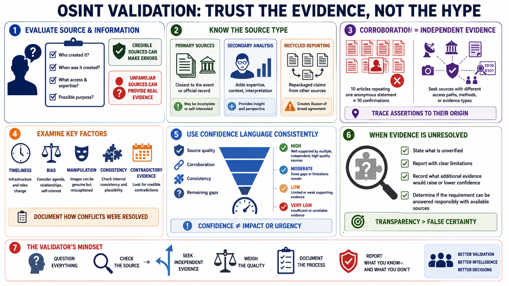

Validate Sources and Corroborate Claims
Connecting to LMS... Progress: in progress

Narration
Validation evaluates both the source and the specific information it provides. Ask who created the material, when, with what access and expertise, and for what possible purpose. A credible publisher can make an error, while an unfamiliar source may provide a verifiable primary artifact.
Distinguish primary sources, secondary analysis, and recycled reporting. Primary material is closest to the event or official record, but it may still be incomplete or self-interested. Secondary sources can add expertise and context. Recycled claims can create the illusion of broad agreement.
Corroboration means independent evidence supports a claim. Ten articles repeating one anonymous statement are not ten confirmations. Trace assertions to their origin and seek sources with different access paths, methods, or evidence types.
Examine timeliness, bias, manipulation, and internal consistency. Infrastructure and roles change. Images can be genuine but miscaptioned. Old records can accurately describe a past state while misleading a current assessment. Look for credible contradictory evidence and document how conflicts were resolved.
Use confidence language consistently. Confidence reflects source quality, corroboration, consistency, and remaining gaps. It is not the same as impact or urgency, and it should not be inflated because a conclusion feels plausible.
When evidence remains unresolved, say so. Reporting an unverified claim with clear limitations is more useful than forcing certainty. Record what additional evidence would raise or lower confidence and whether the requirement can be answered responsibly with available sources.